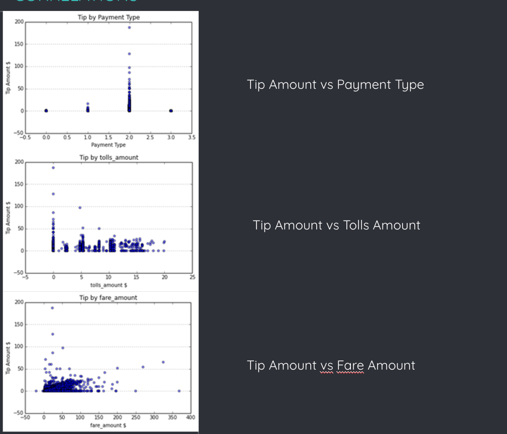
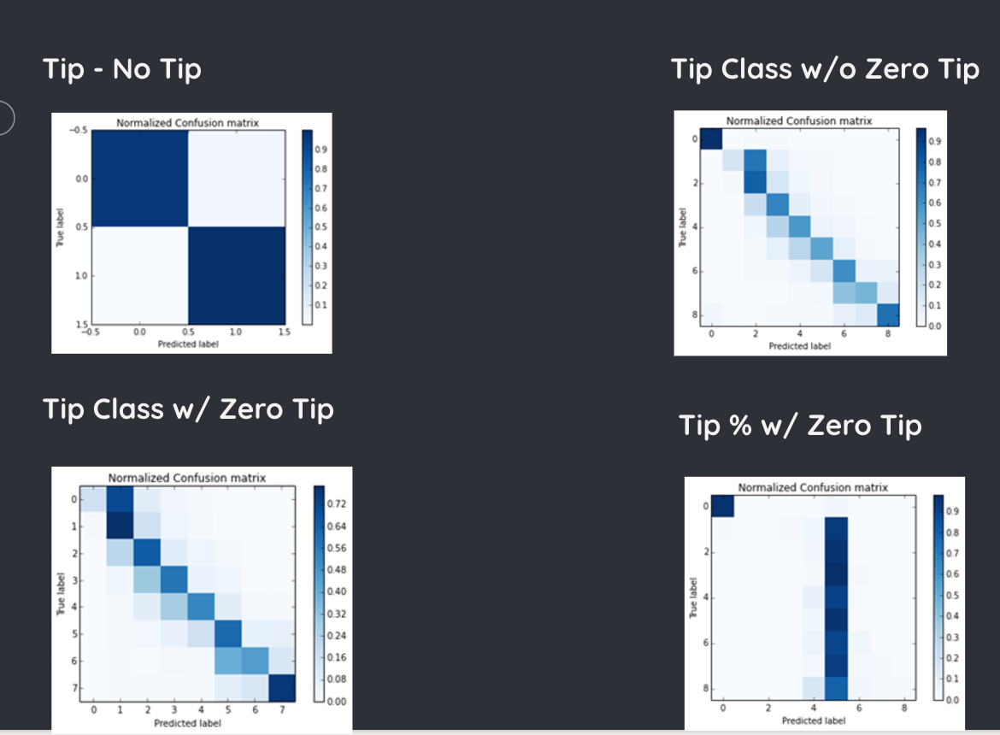

The overall objective of this project was to develop an algorithm that can be used to analyze the pattern in which cabs operate in a city to try and predict the tip can be expected per fare. The idea for this project was based on the assumption that the trip history of cab drivers when combined with demographic data about the model the tipping habits of people at different location, different points of times and for different kinds of trips. Using different machine learning techniques, we wanted to develop a system that would assign a given trip into specific classes designating tip amounts.
The dataset was obtained from the New York City Taxi and Limousine Commission(NYCT&L). It covers four years of taxi operations in New York City and includes 697,622,444 trips.
Source of the dataset: http://publish.illinois.edu/dbwork/open-data/
he data consists of two parts - Trip data containing trip information like pickup_datetime, trip distance, trip time etc. and Fare data containing fare information like fare amount, tip amount etc.
We had latitude and longitude information in our trip data. We wanted to get information about the characteristics of the place like affluency, cost of living etc. Our initial plan was to split our latitude and longitude into the different boroughs. But the boroughs extend over a large area, so we instead decided to go with zip codes . We found open data which had zip codes and the latitude-longitude pair for the centre of that zip code. We also scraped a website to obtain demographic information of a zip code. We joined these datasets and added in the attributes on demographic information to our merged trip-fare dataset.
Like mentioned earlier, the dataset consists of trip and fare data. Our initial ideas were to predict peak hours in the city and predict traffic at different times as a function of the average speed. After further analysis and discussion we concluded these problem statements are good visualization projects and we looked at more machine learning based problem statement.
Wait time Prediction
Our next approach was to predict the wait time - the time a taxi driver has to wait in between trips. The dataset does not explicitly have the wait times. We would have had to derive the wait times between trips from the pickup and dropoff timings and the passenger count information. We performed these data operations and figured out the dataset had 98% zero wait time and the rest of it was about an average of just one minute. Since the data was very skewed and since there was not much of a practical significance of the predicting wait time problem we decided to try a explore the dataset with a slightly different angle. We found that our previous analysis could be leveraged to try and solve another challenging problem, that of tip prediction.
Tip Amount Prediction
We wanted to predict the tip amount a driver is likely to receive.
Since we found the data to be skewed for wait times, we wanted to confirm that was not the case for tip amounts. We found 50% of the data had zero tip. So, we were safe here. Our generic approach was to visualize the data to understand it better. This would give us information about outliers and incorrect (absurd values) that need to be removed. Apart from data cleaning, the other important affordance of the visualizations is the correlation we can derive between the different attributes and the tip amount.
In order to analyze the Jeopardy data and generate insights out of it, we followed the a process that looked at the data using the following visualizations:
Visualizations
Correlations
Confusion Matrix